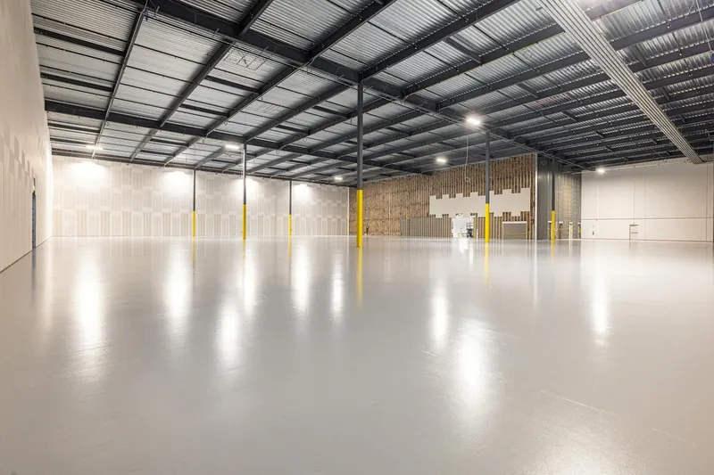

Quick Answers
What kinds of commercial buildings can take spray foam?
Most of them. Warehouses, offices, retail stores, churches, restaurants, agricultural buildings and light industrial shops can all be foamed, whether the frame is steel, wood or masonry. What changes from one building to the next is the foam type and the fire covering, so we start by looking at how the space is built and used.
Which energy code applies to commercial buildings in Tennessee?
The 2021 IECC and ASHRAE 90.1-2019, with Tennessee amendments, effective April 17, 2025, according to the Department of Energy's state code status page. Local governments can enforce stricter versions, so the permit office and the project's architect or engineer settle the compliance path. We work to the insulation values on the approved plans.
Open cell or closed cell for a commercial building?
Closed cell for steel roof decks, metal wall panels and anything near grade or moisture. Open cell for framed office walls, interior partitions and the roof or attic space above a drop ceiling in a dry, wood-framed building. In one manufacturer's testing, closed cell works as an air barrier and Class II vapor retarder at 1 inch.
When Commercial Spray Foam Makes Sense
- A metal warehouse or shop roof drips on cool mornings onto stock or equipment.
- Offices or a sales floor under the roof run hot all summer.
- A church sanctuary with a tall ceiling is costly to heat for a few hours a week.
- A farm shop or light industrial space is being turned into heated or cooled space.
- An office build-out has new framed walls to insulate before drywall.
Commercial spray foam insulation in Knoxville is not always the answer. A building that needs only a few gaps sealed, or offices that mainly want quiet, may do better with other products, and we will say so.
How a Commercial Foam Job Works
The foam choice is the easy part. The planning goes into fire coverings, lift equipment, and the order areas get sprayed so the building keeps working.

Walk-through and code check
We look at the structure, deck, panels, HVAC and how each room is used, then confirm with the permit office which covering each area needs.
Closed cell on steel
Steel decks and panels get closed cell, which bonds to metal, slows vapor and, per the Department of Energy guide, does not absorb water. One building supplier, citing a manufacturer, gives 1.5 inches as the minimum and recommends 2 inches under roof steel. We treat that as common practice, not code.
Open cell in framed areas
Wood-framed walls, partitions and the space above a drop ceiling in a dry, framed building can take open cell, which costs less per inch. It stays off steel, wet areas and walls below grade.
Fire covering
Foam facing occupied rooms needs a 15 minute thermal barrier, such as 1/2 inch gypsum, or a coating system tested with that foam. One closed cell product passed an NFPA 286 room test when coated at 18 mils wet, which can spare hanging board on steel framing.
Ventilation and re-entry
Following EPA guidance, we exhaust at the spray area, bring make-up air from the far side, and run exhaust about 10 percent above supply so the zone stays under negative pressure. People stay out until the re-entry window passes, about 24 hours for many two-part foams.
Commercial Spray Foam Cost
Price turns on square footage, foam type and depth, ceiling height and lift equipment, the coating or drywall over the foam, and how many phases the schedule needs. An empty warehouse sprays faster than one full of racks and equipment to cover.
National guides checked in October 2026 list installed open cell at $1.50 to $3.50 per square foot and closed cell at $3.00 to $5.00 (HomeGuide, 2026), mostly from residential work. At This Old House's April 2026 per-inch prices, 2 inches of closed cell runs about $2.50 to $5.80 per square foot, so a hypothetical 6,000 square foot steel roof lands near $15,000 to $34,800 for foam alone, before coating.
See the spray foam cost guide for more by job type, or call (865) 564-7823 for a free estimate scoped to your building.
East Tennessee Conditions for Commercial Buildings
Knoxville summers average a July high of 88.4 F and about 1,574 cooling degree days a year. At night a steel roof can cool several degrees below the air around it, and warm, damp indoor air condenses on that panel and drips. Trade sources note that air leaks carry far more moisture into roof and wall cavities than vapor diffusion, so sealing the metal matters as much as R-value.
Building codes vary too: the City of Knoxville enforces the 2024 IBC, Sevierville the 2021 IBC, and Farragut adopted the 2018 IBC in 2019. We check covering and inspection details with the local office before pricing.
What the Free Estimate Includes
We walk the building with you or your facilities lead, measure roof and wall areas, and look at deck type, panels, purlins, existing insulation, HVAC units and sprinkler lines. You get a written scope and price listing foam type and depth by area, the fire covering and the equipment needed.
Planning around your operations
Scheduling is something we work out with you, not something settled on a first call. Together we decide which zones can close and for how long, where lifts can stage, how stock gets covered or moved, and when each zone's HVAC can be off.
Commercial Spray Foam FAQ
Related Services
- Metal building insulation: stopping condensation on steel roofs and walls.
- Pole barn insulation: post-frame barns, equipment buildings and farm shops.
- Closed cell spray foam: how the dense foam performs on metal, masonry and below grade.
Where We Do Commercial Work Most
- Morristown: more than 100 manufacturers, so plenty of plant, warehouse and shop space.
- Alcoa: an industrial city built around the aluminum plant, beside McGhee Tyson Airport.
- Maryville: more than 100 manufacturing plants in Blount County, and a city on the 2024 IBC and IECC since January 1, 2026.
- Oak Ridge: office, lab and support buildings around the federal research sites, in a city now on the 2024 IBC.
- Sevierville: retail and hospitality buildings serving the tourism trade, with new work under the 2021 IBC.
Talk With a Commercial Insulation Contractor
As a commercial insulation contractor in Knoxville, we start every building with a walk-through and a written scope. Call (865) 564-7823 or use the form to request a free estimate, and tell us when the building is easiest to see.